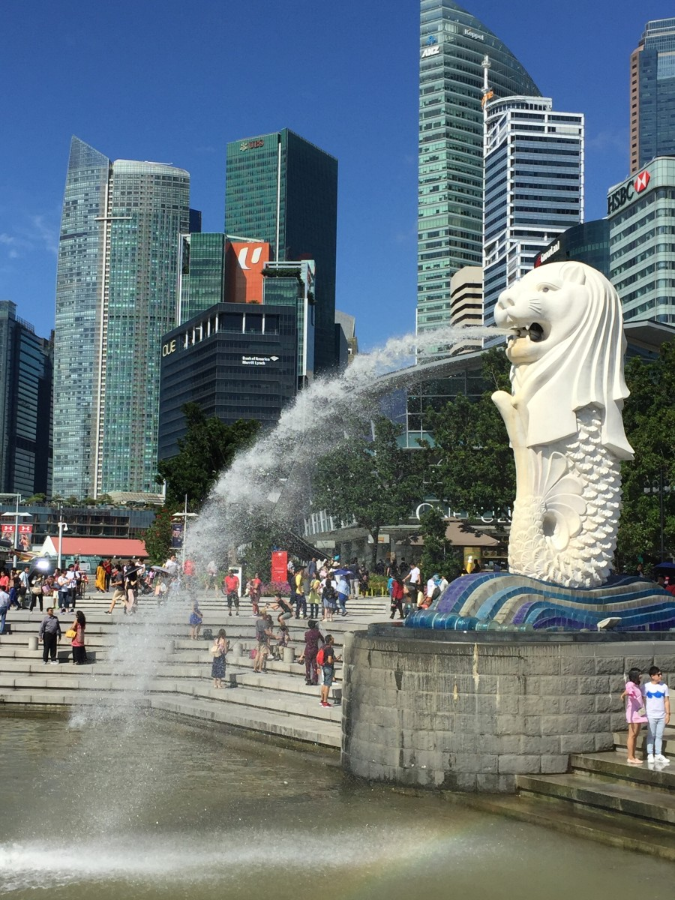
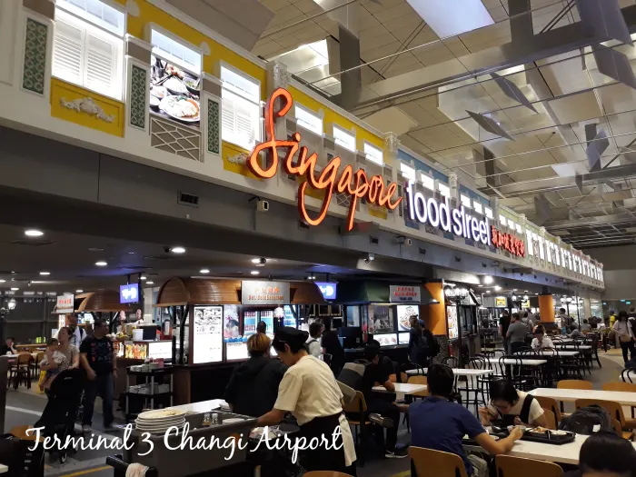
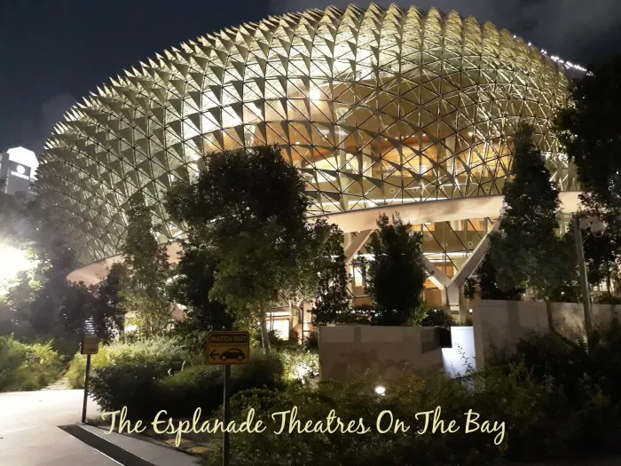
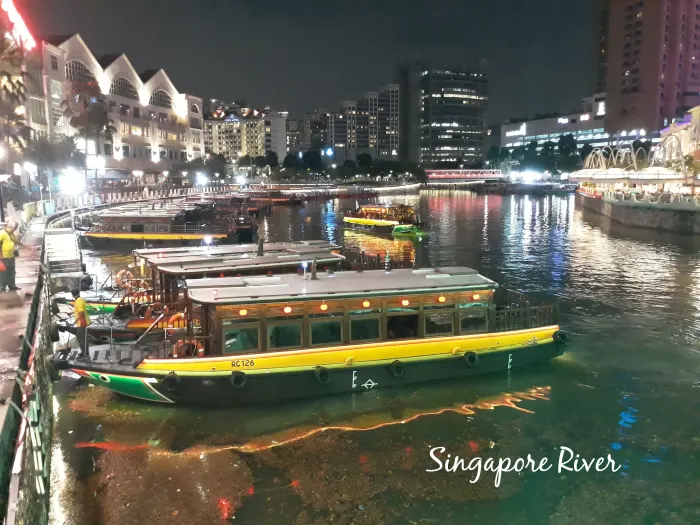
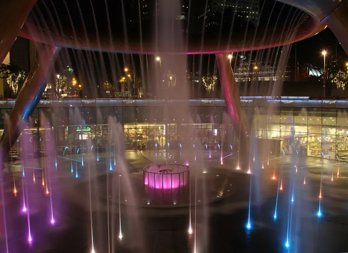

Singapore (/ˈsɪŋ(ɡ)əpɔːr/ (listen)), officially the Republic of Singapore, is a sovereign island country and city-state in maritime Southeast Asia. It lies about one degree of latitude (137 kilometres or 85 miles) north of the equator, off the southern tip of the Malay Peninsula, bordering the Strait of Malacca to the west, the Singapore Strait to the south, the South China Sea to the east, and the Straits of Johor to the north. The country's territory is composed of one main island, 63 satellite islands and islets, and one outlying islet, the combined area of which has increased by 25% since the country's independence as a result of extensive land reclamation projects. It has the third highest population density in the world. With a multicultural population and recognising the need to respect cultural identities of the major ethnic groups within the nation, Singapore has four official languages: English, Malay, Mandarin, and Tamil. English is the lingua franca and numerous public services are available only in English. Multiracialism is enshrined in the constitution and continues to shape national policies in education, housing, and politics.
Singapore's history dates back at least a millennium, having been a maritime emporium known as Temasek and subsequently as a major constituent part of several successive thalassocratic empires. Its contemporary era began in 1819 when Stamford Raffles established Singapore as an entrepôt trading post of the British Empire. In 1867, the colonies in Southeast Asia were reorganised and Singapore came under the direct control of Britain as part of the Straits Settlements. During the Second World War, Singapore was occupied by Japan in 1942, and returned to British control as a separate crown colony following Japan's surrender in 1945. Singapore gained self-governance in 1959 and in 1963 became part of the new federation of Malaysia, alongside Malaya, North Borneo, and Sarawak. Ideological differences, most notably the perceived encroachment of the egalitarian "Malaysian Malaysia" political ideology led by Lee Kuan Yew into the other constituent entities of Malaysia—at the perceived expense of the bumiputera and the policies of Ketuanan Melayu—eventually led to Singapore's expulsion from the federation two years later; Singapore became an independent sovereign country in 1965.
After early years of turbulence whilst lacking natural resources and a hinterland, the nation rapidly developed to become one of the Four Asian Tigers based on international trade and economic globalisation, integrating itself within the world economy through free trade with minimal to no trade barriers or tariffs, export-oriented industrialisation, and the large accumulation of received foreign direct investments, foreign-exchange reserves, and assets held by sovereign wealth funds. A highly developed country, it is tied for 11th on the UN Human Development Index and has the second-highest GDP per capita (PPP) in the world. Identified as a tax haven, Singapore is the only country in Asia with a AAA sovereign credit rating from all major rating agencies. It is a major aviation, financial, and maritime shipping hub, and has consistently been ranked as one of the most expensive cities to live in for expatriates and foreign workers. Singapore is placed highly in key social indicators: education, healthcare, quality of life, personal safety, infrastructure, and housing, with a home-ownership rate of 88 percent. Singaporeans enjoy one of the longest life expectancies, fastest Internet connection speeds, lowest infant mortality rates, and lowest levels of corruption in the world.
Singapore is a unitary parliamentary republic with a Westminster system of unicameral parliamentary government, and its legal system is based on common law. Although the country is a multi-party democracy with free elections, the government under the People's Action Party (PAP) wields significant control and dominance over politics and society. The PAP has ruled the country continuously since full internal self-government was achieved in 1959, with 83 out of 104 seats in Parliament as of the 2020 election, the rest of the seats being held by the Workers' Party (WP) and the Progress Singapore Party (PSP). One of the five founding members of ASEAN, Singapore is also the headquarters of the Asia-Pacific Economic Cooperation (APEC) Secretariat, the Pacific Economic Cooperation Council (PECC) Secretariat, and is the host city of many international conferences and events. Singapore is also a member of the United Nations, World Trade Organization, East Asia Summit, Non-Aligned Movement, and the Commonwealth of Nations.
Singapore is one of the cleanest and most orderly cities in the world, so much so that even the trees lining the main roads are planted at precise twenty-foot intervals. It is also one of the safest cities in the world, thanks in part to the top two local pastimes—shopping and eating. It is quite safe to walk the city's streets after dark because they are well-lit and busy with shoppers and diners at all hours.
This city is a shoppers' paradise, where you can find fashion items ranging from small store bargains to pricey brand merchandise. For those who are crazy about cool gadgets and cutting-edge technology, there are heaps of shops selling all the best electronics.
Changi International Airport is one of the best airports in the world and has hundreds of awards under its belt. It has full facilities for every kind of traveller, from babies to adults with special needs.
Nicknamed "The Durian" because of its resemblance to the smelly fruit, the Esplanade is a performing arts centre with all kinds of events and happenings. It contains theatres, a library, and various art galleries. Nearest MRT station : Esplanade
Take a river taxi cruise along the Singapore River for some spectacular views of the city's skyline. You'll pass by the Merlion, Boat Quay, Clarke Quay, Robertson Quay, and Marina Bay. This is a great way to see the contrast between Singapore's rejuvenated colonial buildings along the riverside and its modern skyscrapers in the background.
Sim Lim Square is the best place to shop for home theatres, cameras, computers, laptops, iPods, and anything else related to electronics and IT. Another shopping centre called Funan Centre also has plenty of these items. (Update: Funan Centre is currently closed and undergoing redevelopment). Nearest MRT station : Rochor
Go to this website for your booking : Book now